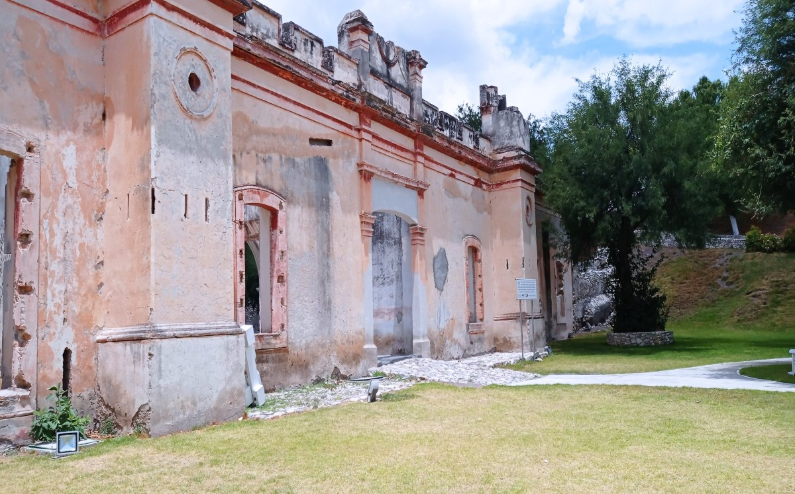
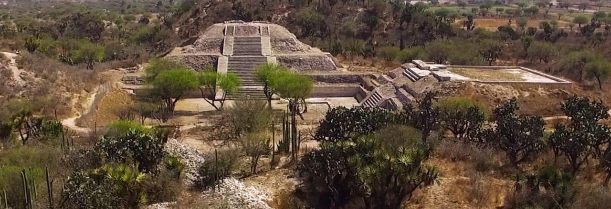

Es la imagen religiosa más importante de Tlacotepec de Benito Juárez. Se trata de un Cristo Negro venerado desde hace más de 400 años y considerado milagroso por miles de fieles que visitan el santuario cada año.

Es un testimonio de la época colonial. Fue construida hace más de 300 años, cuando las haciendas eran el centro de la economía de la región. Visitarla permite observar cómo vivían y trabajaban las personas en aquella época.

Los Teteles de Santo Nombre son una zona arqueológica ubicada en el municipio de Tlacotepec de Benito Juárez. Representan el pasado prehispánico de la región y permiten conocer la cultura y forma de vida de los antiguos pobladores mediante sus estructuras y vestigios arqueológicos

Mapa de tlacotepec y como llegar 3 diferentes destinos